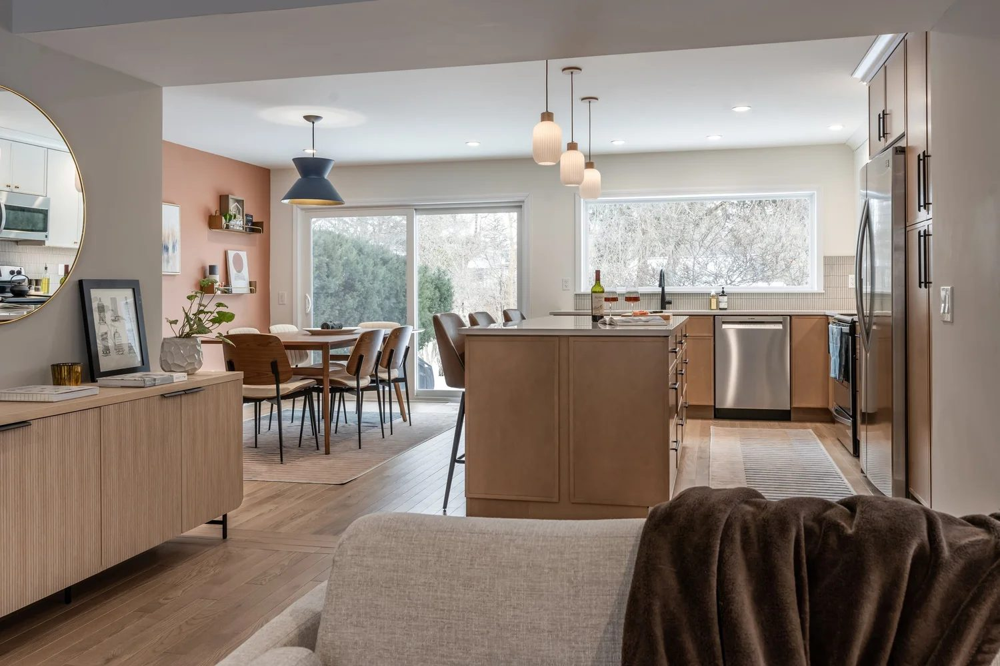
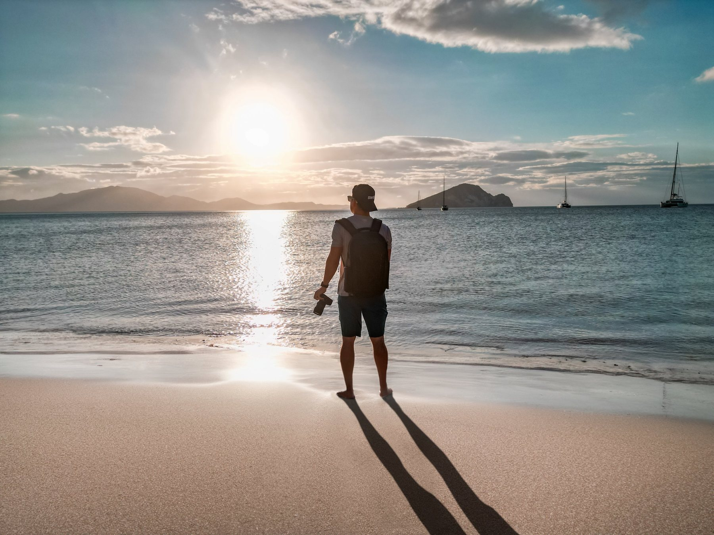

Design
Architecture and interiors, studied up close. Rooms, finishes and details I find myself drawn to, from calm bedrooms to kitchens that work hard.
See design workArchitecture services & inquiries
Architect + Photographer
Design, photography and travel from architect Erik Reynolds: a place to share the spaces, places and moments he loves.
Two disciplines, one point of view
Spaces are designed before they are photographed. Because I work on both sides of that line, I know what a room is trying to do, and how to show it. This is where I share it all.
Selected work
Tap any photo to enlarge. More projects and travel galleries on Instagram.
What you'll find here
Architecture and interiors, studied up close. Rooms, finishes and details I find myself drawn to, from calm bedrooms to kitchens that work hard.
See design workAn architect's eye behind the lens: straight lines, honest light, and quiet compositions, whether the subject is a room or a still life.
Browse everythingGreece, New Zealand, the Adirondacks and beyond. Moments with Liz and the people we love, captured as they happened.
See the travels
How I see a space
About
Millennial. Architect. Creator, still earning the title.
My wife Liz is the beautiful gal you'll spot in a lot of these pictures. Together we love to experience new places and new things with the people we love, and this site is dedicated to sharing those moments.
When I'm not designing spaces, I'm photographing them, or out chasing light somewhere new.

Say hello
Thinking about a design project, want to talk travel, or just saying hi? Pick a topic and send me a note.
Planning a home, renovation or addition? Start an architecture inquiry for a few more project details.
Prefer email? erikreynolds1275@gmail.com